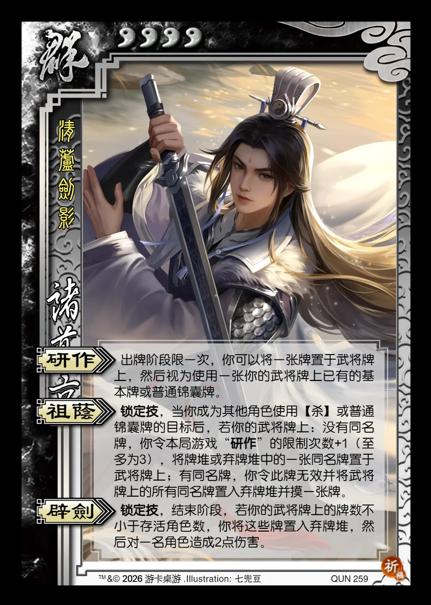

点击卡面查看大图
群
诸葛京
♥4清芦剑影
研作
出牌阶段限一次，你可以将一张牌置于武将牌上，然后视为使用一张你的武将牌上已有的基本牌或普通锦囊牌。
祖荫锁定技
锁定技，当你成为其他角色使用【杀】或普通锦囊牌的目标后，若你的武将牌上：没有同名牌，你令本局游戏“研作”的限制次数+1（至多为3），将牌堆或弃牌堆中的一张同名牌置于武将牌上；有同名牌，你令此牌无效并将武将牌上的所有同名牌置入弃牌堆并摸一张牌。
辟剑锁定技
锁定技，结束阶段，若你的武将牌上的牌数不小于存活角色数，你将这些牌置入弃牌堆，然后对一名角色造成2点伤害。